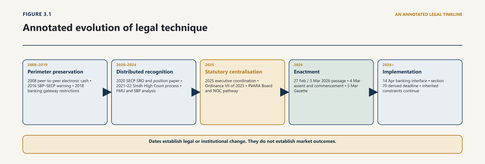
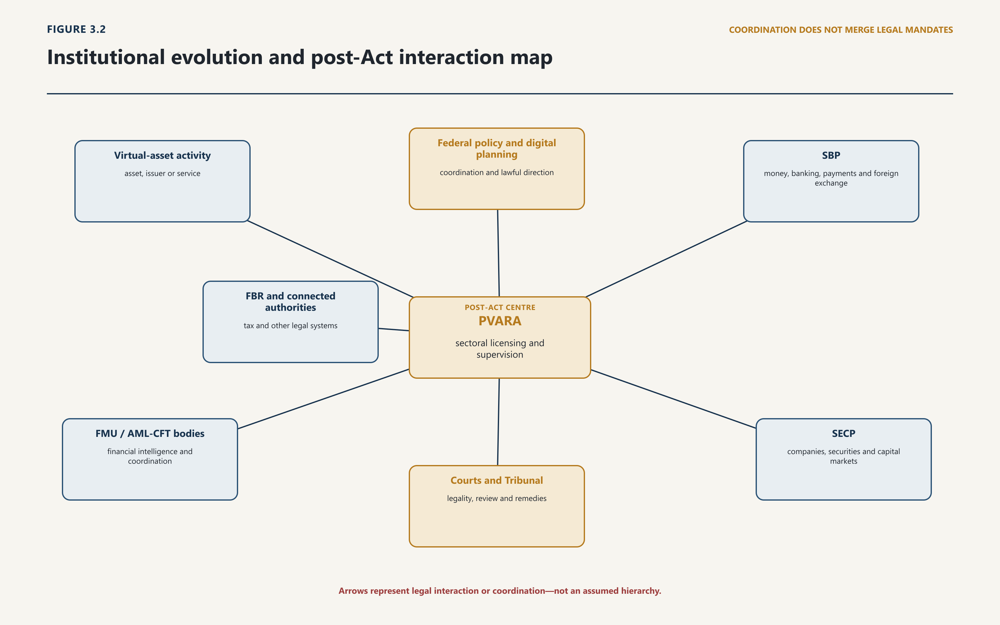

The history of digital assets in Pakistan cannot be told accurately as a sequence of headlines moving from "ban" to "legalisation". That description compresses several different legal acts into two misleading words. A public warning is not a statute. A direction to banks does not necessarily prohibit every act by every person. A consultation paper does not grant permission. A judicial order requiring institutions to consider a question does not decide the policy. An Ordinance is not the same constitutional instrument as an Act of Parliament. Assent is not Gazette publication, and enactment is not implementation.
3.1.2 Digital and electronic legislation before virtual-asset legislation
The chapter therefore begins by correcting a formulation that has entered even careful accounts, including the handoff at the close of Chapter 2. Pakistan's sequence did not open with a central-bank prohibition in 2016. What the controlled record establishes for 2016 is that an official State Bank publication issued three years later recorded that a joint SBP–SECP public warning had been given. The underlying notice is not authenticated in this treatise's corpus. The first instruments capable of changing the conduct of identified institutions arrived in April 2018, and their addressees were regulated financial entities rather than the general population. Section 3.3 establishes both propositions from primary material. They are stated here because a chapter whose subject is the difference between legal instruments cannot open by adopting a description that collapses them.
Chapter 2 established what the technology made possible and how the global system developed: cryptographic scarcity, programmability, stable-value arrangements, tokenisation, decentralised finance, unincorporated governance and machine-mediated execution. That analysis is not repeated here. This chapter takes the global position as given and asks a narrower and harder question: what did the Pakistani state, through which institutions and by which instruments, actually do about it, and what did each act transmit to the next period?
The distinction matters for more than economy of words. Chapter 2 traces a functional trajectory common to every jurisdiction. Chapter 3 traces a legal and institutional trajectory specific to one, and specific in ways a global narrative cannot supply: the particular mandates SBP and SECP already held, the constitutional device by which the first sectoral architecture was made, the savings clause by which the temporary regime was carried into the permanent one. Where this chapter refers to technology, it does so only to identify what the state was responding to.
The analysis distinguishes what a source can prove from the present status of the proposition it supports. This chapter uses the proposition-status labels operative, historical, draft, [OFFICIAL POSITION], [DEMONSTRATED], [RECOMMENDATION], unresolved gap and status requiring verification. The systems answer different questions. Source class asks what a document is capable of proving; proposition status asks what legal or evidential state the statement currently carries. A Class A source can support a historical proposition, as the Virtual Assets Ordinance, 2025 does throughout this chapter; a Class C official communication can establish an [OFFICIAL POSITION] while proving nothing about the legal status of the body or proposal described. Every load-bearing proposition must therefore carry both attributes in the underlying ledger.
This chapter uses legal and institutional significance, rather than publicity, as its test for including an event. A turning point matters where it changed one or more of five things: the legal perimeter; the institution responsible; the state's knowledge of activity or risk; the process by which policy was formed; or the practical ability of a lawful actor to enter the regulated system. For each period the inquiry is the same: what was the prior position, who acted, through what instrument or procedure, with what legal effect, and what constraint or possibility did that action transmit to the next period?
The resulting history has three phases. From 2016 to 2019, Pakistan principally preserved inherited monetary, banking, payment and foreign-exchange perimeters. From 2020 to 2024, consultation, litigation and financial-intelligence analysis exposed the limits of that distributed response. From 2025 to 2026, policy coordination was centralised, a temporary Ordinance created a sectoral architecture, and Parliament enacted the Virtual Assets Act, 2026. That final step changed the legal foundation, but it did not erase inherited mandates or supply every rule, institution, interface and remedy required for execution.
Two source disciplines follow. First, the Virtual Assets Ordinance, 2025 is treated as historical. No current proposition in this treatise depends upon it. Its relevance is confined to genealogy, transition and the savings provision in the Act. Secondly, institutional publications are used for the propositions they can prove. An FMU analysis of suspicious-transaction reports can establish reported patterns and identified vulnerabilities; it cannot establish the size or ordinary composition of Pakistan's market. A government press release can establish that a meeting was announced and the participants or proposals officially described; it cannot prove that a proposed institution acquired statutory power or that an announced economic outcome occurred.
History, on this method, is not background decoration. It is a record of accumulated legal choices. Those choices explain why the present framework is cross-cutting, why some uncertainties survived enactment, and why implementation must be judged against more than the existence of a regulator and an Act.
3.2 International Influences and Domestic Institutional Caution
3.2.1 FATF pressure, financial-integrity concerns and policy transfer
Pakistan did not choose its first response to digital assets in a vacuum, and it should not be assessed as though it had. Between 2014 and 2019 an international standard-setting sequence progressively defined what states were expected to do, and the shape of that expectation changed twice in ways that map directly onto Pakistan's own turning points. This section establishes the frame. It does not restate the technology; Chapter 2 has done that.
3.2.2 The limits of treating external standards as domestic law
One technical premise nonetheless has to be carried forward, because the entire regulatory problem descends from it. The Bitcoin design proposed an electronic-cash system in which a peer-to-peer network, cryptographic proof and a shared transaction history would address double spending without requiring a financial institution to stand between each payer and payee.1 Whatever later systems retained, modified or abandoned from that design, its durable regulatory consequence was structural rather than monetary: the transfer mechanism, the record, the asset representation and the service provider could each be located in a different place, under different control, across technical and territorial boundaries.
For a state, the significance of that separation is that no single inherited mandate covered the resulting set of functions. Issuance, exchange, transfer, custody, brokerage, settlement, platform operation and, later, tokenised claims and protocol-mediated services are not one activity. They had historically been bundled inside identifiable licensed institutions, and the law had regulated the institution rather than enumerating the functions. Once the functions could be unbundled and distributed, an institution-centred architecture could reach some and not others. What differed between jurisdictions was which institution-centred mandates each already possessed, and therefore which fragments of the problem each could reach first.
FATF's first substantial treatment, in June 2014, was conceptual. It supplied definitional vocabulary and identified risks arising from anonymity, limited participant identification, unclear allocation of responsibility and cross-border segmentation.2 It created no obligation and drew no perimeter. Its function was to make an unfamiliar phenomenon legible to supervisors who had no category for it.
The June 2015 guidance made the first strategic choice, and it is the choice that explains Pakistan's opening move three years later. Rather than attempting to regulate an entire distributed system, it concentrated on the points at which that system intersected the already-regulated one, and in particular on convertible virtual-currency exchangers. The reasoning was practical: a state can act most readily where an unfamiliar architecture meets a familiar regulated gateway, because at that point there is an identifiable licensed person, an existing supervisory relationship and an established reporting channel.
The gateway strategy has a characteristic strength and a characteristic weakness, and both recur throughout this chapter. Its strength is that it works immediately and requires no new statute. Its weakness is that it regulates the interface rather than the activity, so its effectiveness depends entirely on whether the activity in fact passes through the interface. Where the same result can be reached without touching a domestic regulated person, gateway control reduces formal-system exposure without reducing the underlying conduct — and, by displacing that conduct, reduces the state's visibility of it as well.
The international demand then changed. FATF amended Recommendation 15 in October 2018 to clarify its application to virtual assets and virtual asset service providers, added both terms to its Glossary, and adopted the Interpretive Note in June 2019. The revised framework required countries to assess the risks arising in the sector and to bring VASPs within licensing or registration, supervision or monitoring, and the preventive measures applicable to financial institutions.3
The shift is easy to understate. Under the 2015 approach, a country discharged its obligation by controlling how regulated institutions dealt with an external phenomenon. Under the 2019 approach, it had to identify the population of service providers, decide which activities fell inside the perimeter, allocate a supervisor, and impose preventive obligations directly on persons who had never been within the financial-supervisory system at all. That is not an intensification of the same task. It is a different task, and it cannot be performed by circular.
Two consequences follow for the assessment of Pakistan's record. First, the 2018 circulars examined in section 3.3 were a competent response to the 2015 standard and an incomplete response to the 2019 one; the gap is not evidence of inattention but of a change in what was being asked. Secondly, no state can satisfy the 2019 requirement without deciding, as a matter of domestic law, which activities and actors are in scope and which institution supervises them. Those are legislative and institutional-design questions, and they explain why the interval between 2019 and 2025 in Pakistan was occupied by consultation, litigation and coordination rather than by a further circular.
FATF addressed financial integrity. It did not address the law of property, securities, taxation, data protection, insolvency, consumer protection or judicial remedies, and did not purport to. A jurisdiction implementing Recommendation 15 in full would still not have decided whether a token is property capable of being held on trust, whether a token offering is a public offer of securities, how a custodian's failure is resolved, how a gain is computed for tax, which court has jurisdiction over an offshore platform, or what a customer may recover and from whom. Compliance with the international standard is therefore necessary and radically insufficient as a description of a legal order — which is why treating movement on the AML/CFT axis as though it settled the private-law and constitutional questions is a recurring analytical error, and why the later functional chapters address those regimes separately.
The vocabulary migrated across the same period from "virtual currency" to "virtual assets", and from institution-named regulated persons to functionally defined ones. That migration is not cosmetic. "Virtual currency" describes a payment phenomenon and invites a monetary-authority response; "virtual asset" describes a class of representations whose legal character is undetermined and invites classification. Correspondingly, a definition naming banks, exchange companies and payment service providers can only reach persons already admitted to those categories, while a definition framed by function — exchanging, transferring, safeguarding, administering, issuing — can reach a person the licensing system has never seen. Pakistan's statutory vocabulary in 2025 and 2026 sits at the end of that migration rather than at the beginning.
One analytical discipline, established here, governs the reading of every instrument in the rest of this chapter. Three propositions are distinct, and public debate has repeatedly treated them as one:
An asset is not legal tender. This is a statement about monetary status. It says nothing about whether the asset is property, a security, a commodity-like investment or a contractual claim, and nothing about whether dealing in it is lawful.
An institution is not authorised to issue, deal in or facilitate the asset. This is a statement about the permitted business of a licensed person, addressed to that person, and enforceable through the supervisory relationship that licensed it.
A person's conduct is prohibited by law. This is a statement of general application, ordinarily requiring a legislative source, and carrying consequences for anyone within the jurisdiction.
The propositions can overlap, and a single document may contain more than one. But none is a synonym for the others, and the second does not imply the third. Much of the confusion in Pakistani public debate between 2018 and 2025 came from reading an institutional direction containing the first two propositions as if it had enacted the third for the whole population. Section 3.3 applies the distinction to the instruments themselves; SBP itself confirmed it in 2025.
Legal consequence. The international sequence explains the shape of Pakistan's response but does not excuse or complete it. A warning can communicate risk. A direction to regulated institutions can protect a supervised balance sheet and interrupt a fiat gateway. Neither can classify a tokenised security, govern custody, protect customer assets, license an offshore-facing platform, allocate supervisory jurisdiction, obtain platform data or provide specialised review. The distance between those two capacities became the central institutional fact of the next phase.
3.3 Warnings, Banking Restrictions and Foreign-Exchange Control
3.3.1 SBP communications and regulated-entity conduct
The earliest Pakistan-specific posture located in the reviewed official record was precautionary. SBP's Financial Stability Review 2018 records that SBP and SECP had issued a joint public warning in September 2016 concerning Bitcoin and other virtual currencies.4 The underlying 2016 notice has not been authenticated within the controlled corpus, so the proposition is deliberately narrow: an official SBP publication later recorded that a joint warning occurred. The absence of the underlying notice prevents reliance on its exact wording or scope, and prevents any characterisation of the 2016 act as a prohibition, a direction or an exercise of statutory power.
3.3.2 FERA, outward value transfer and the preservation of the financial perimeter
The decisive instruments arrived in April 2018. On 6 April, SBP issued BPRD Circular No 03 of 2018 to banks, development finance institutions, microfinance banks, payment system operators and payment service providers. It stated that listed virtual currencies and ICO tokens were not legal tender, were not issued or guaranteed by the Government of Pakistan, and that SBP had not authorised or licensed any person for their issuance, sale, purchase, exchange or investment. It advised the named regulated entities to refrain from processing, using, trading, holding, transferring value, promoting or investing in them; not to facilitate customers to transact in them; and to report any such transaction immediately to FMU as suspicious.5
The legal effect of BPRD Circular No 03 of 2018 becomes clear only when its content is separated into the three registers it in fact contains, because each register carries a different consequence and a different limit.
The first register is declaratory. The statements that the listed items are not legal tender, are not government-issued or guaranteed, and that no person has been authorised or licensed in respect of them are statements of existing legal and administrative fact. They change nothing; they record a position. Their function is to remove the argument that official silence implied official sanction. A declaratory statement of this kind cannot create an offence, and its accuracy is testable against the monetary and licensing law it describes.
The second register is directive. The instruction to refrain from processing, using, trading, holding, transferring value, promoting or investing, and not to facilitate customers, is addressed to a closed and named class of supervised institutions. Its force derives from the supervisory relationship, and its reach ends at the boundary of that relationship. A direction of this character binds the addressee, not the addressee's customer, and not a person who has no relationship with the addressee at all. The identification of the precise enabling provision under which each register was issued is a question of vires reserved to Chapter 10, where the financial perimeter is examined as an integrated system; the point required here is the prior one, that the instrument's reach is defined by its addressee class.
The third register is reporting. The instruction to report any such transaction immediately to FMU as suspicious operates on the financial-intelligence system rather than on the transaction. Its consequences are informational and, as shown below, asymmetric.
On the same date, SBP issued a public caution. It warned of price volatility, exchange failure or closure, hacking and fraudulent schemes; stated that no legal protection or recourse was available in the event of specified losses; and warned that using virtual currencies to transfer value outside Pakistan could engage applicable law.6 The public caution is a fourth kind of instrument again — advisory, addressed to the general public, and creating no obligation on anyone. Its final sentence is often misread. To say that conduct could engage applicable law is to identify a risk that other legislation may be triggered; it is not to legislate.
On 18 April, FE Circular No 03 of 2018 applied materially similar restrictions and reporting expectations to exchange companies and exchange companies of B category.7 The separate instrument was necessary precisely because the addressee class was different: exchange companies sit within the foreign-exchange regime rather than the banking one, and a direction issued to banks does not reach them. The need for two circulars is itself evidence that the technique in use was addressee-based rather than conduct-based.
The legal technique was perimeter preservation. SBP used authority over supervised financial institutions, payments and foreign-exchange gateways. The immediate object was not to create a taxonomy of digital assets or a licensing system for their service providers. It was to prevent institutions within SBP's perimeter from acquiring exposure, facilitating transactions or becoming conduits for activity whose legal, prudential and financial-integrity controls had not been built. Measured against FATF's 2015 gateway strategy, that was a competent and orthodox response.
That distinction is not semantic. None of the April 2018 documents was an Act of Parliament declaring that every possession, transfer or transaction in a virtual asset constituted an offence. SBP later confirmed the point expressly. Its clarification of 30 May 2025 stated that the 2018 advice was issued because Pakistan lacked a legal and regulatory framework, "not because it was declared illegal in the country".8 That clarification is significant beyond its immediate subject. A regulator stating, seven years later, that its own instrument had been widely misread is evidence of a communication failure with legal consequences, and it is a caution against inferring a general prohibition from an institutional direction in any future instrument.
The 2018 posture nevertheless had effects well beyond its formal addressees, and those effects are the reason the misreading was reasonable. If banks and payment providers could not facilitate customers, a domestic business could not readily obtain ordinary banking rails for exchange activity. If exchange companies could not process or promote the asset, formal fiat conversion narrowed further. If every related transaction encountered an immediate suspicious-transaction reporting expectation, compliance departments had little incentive to distinguish business models that the legal order had not yet classified; the safest institutional response to an unclassified customer is refusal. The practical environment could therefore feel prohibitory, and function prohibitorily for anyone requiring banking access, even where the legal proposition was narrower. A rule that binds only institutions can nonetheless determine what an individual is able to do, whenever the institutions control the only lawful route.
The reporting instruction also shaped the state's information, and did so in a way that constrained policy for the next seven years. Transactions that reached regulated institutions could enter FMU's intelligence environment, but transactions displaced to cash, foreign platforms, informal brokers or self-hosted wallets might not. The policy could therefore increase knowledge about the suspicious portion visible at the perimeter while leaving the denominator unknown.
The consequence is a specific evidential pathology. Authorities could demonstrate risk cases without being able to measure the full population of activity; market advocates could cite private estimates without access to verified domestic regulatory data; and neither side could refute the other, because the two claims were about different and non-overlapping populations. A debate conducted on those terms cannot be resolved by argument, only by the construction of a better information base — which is a licensing-and-reporting function, not a warning function, and one of the strongest arguments for the eventual move to a sectoral regime. It is an argument from measurement rather than from permission.
The underlying asymmetry is structural. The state could control institutions within its inherited perimeter, while users could reach offshore platforms, peer-to-peer markets or self-hosted arrangements through the internet. Activity outside the regulated interface did not thereby become safe, lawful or measurable; it became harder for domestic institutions to observe and support, and the public warning made clear that users might bear the resulting losses without an identified protective regime.
The approach also preserved multiple legal questions for later resolution. If an asset was not legal tender, could it nevertheless be property, a security, a commodity-like investment, a contractual claim or evidence of another right? If a token offering resembled a public investment, did securities law apply by substance? If a person transferred value across the border, which foreign-exchange provisions governed? Which institution could license custody or an exchange? What happened if a custodian failed? The circulars did not purport to answer those questions, because the mandates through which they were issued were not a complete digital-asset code.
Legal consequence. The institutional lesson is double-sided. SBP acted through available legal control points in response to volatility, illicit-finance, consumer and financial-stability concerns, and did so at the level the international standard then required. But the choice established a path dependency: later regulation would have to reconnect any licensed sector to a banking and foreign-exchange perimeter originally designed to exclude it. The 2026 banking circular examined in section 3.9 did not begin from a blank page. It had to replace, and conditionally reconstruct, the interface created in 2018.
3.4 Market Use, Public Claims and Legal Ambiguity
3.4.1 P2P activity, exchanges, mining and public participation
By 2020, the limits of a central-bank-centred response were visible in the conduct of another regulator. On 27 August, SECP issued SRO 795(I)/2020 under section 40B of the SECP Act, directing companies and limited liability partnerships to comply with the SBP circular in letter and spirit. It also directed regulated persons to report related transactions to FMU in accordance with the applicable AML/CFT regulation.9
3.4.2 The difference between economic existence and legal recognition
The directive is analytically important because of what it demonstrates about the architecture, not because of what it added. SECP could not enlarge the SBP circular's substantive content; it could only extend the same restrictive interface through a second supervisory relationship, reaching corporate and capital-market persons whom SBP's addressee classes did not cover. The technique remained addressee-based. It did not create a new general offence, and it did not classify any token or service under securities law — which would have required a substantive determination that the directive did not make. Two regulators had now each extended the perimeter as far as their own mandates reached, and the aggregate still left uncovered anyone who was neither a supervised financial institution nor a regulated corporate person.
Less than three months later, SECP published its Position Paper: Regulation of Digital Asset Trading Platforms. The paper was consultative only, not operative law. It sought views on definitions, possible regulatory approaches, token offerings, platform operation, custody, settlement and secondary trading.10 Read together, the August directive and the November paper reveal a state holding two positions that are sometimes incorrectly treated as contradictory. Existing regulated persons were required to respect the prevailing perimeter, while the regulator studied how a lawful future perimeter might be designed. Compliance with the present and inquiry into reform can coexist; indeed a regulator that suspended enforcement while consulting would be acting improperly. The pairing is evidence of ordinary regulatory practice, not of institutional confusion.
Litigation then converted dispersed uncertainty into a question institutions had to answer on the record. In Waqar Zaka v Federation of Pakistan, the Sindh High Court considered a petition connected with establishing a cryptocurrency-exchange business. Its order of 21 October 2021 recorded the difficulty of carrying on such a business under the prevailing circulars, SBP's position that cryptocurrency was not legal tender, the absence of a regulatory framework, uncertainty as to whether trade in a non-legal-tender cryptocurrency was permissible, and enforcement concerns. The Court constituted an inter-agency process and required an initial report on the feasibility of introducing cryptocurrency in some form.11
The disposal repays close attention, because the public account of it is inaccurate in a way that matters. The judgment reported as 2022 MLD 1134 did not judicially legalise or prohibit the sector. It placed the committee's recommendation before the competent executive institutions for consideration.
That outcome reflects the boundary of the constitutional jurisdiction invoked. A High Court exercising writ jurisdiction can compel a public functionary to exercise a discretion it has failed to exercise, to consider a question it has refused to consider, or to give reasons; it does not ordinarily direct the content of a policy choice committed to the political branches and to specialised regulators. Where the complaint is not that an authority decided wrongly but that no authority had decided at all, the available relief is procedural: identify the institutions with the relevant mandates, require them to convene, and require a report. That is what the Court did. It is a real remedy — it converts institutional drift into an obligation to attend — and it is not the same as an order to regulate.
The precedential weight of the disposal should be stated with the same care. An order constituting a committee and requiring a feasibility report decides a question of process. It does not lay down a proposition of law about the character of virtual assets, and later reliance on it for that purpose would be misplaced. What the litigation established, and what makes it a genuine turning point on this chapter's test, is different and more institutional: it made the absence of a framework a matter of record before a superior court, and it placed responsibility for the omission with named institutions rather than leaving it distributed among all of them.
FMU's subsequent strategic analysis added a different kind of institutional knowledge. Its report examined suspicious-transaction reports received during July 2021 to June 2022, described delivery channels, demographic and geographic patterns within that reported population, and identified possible predicate offences and vulnerabilities. It stated that earlier related analyses had been conducted in December 2018, March 2020 and August 2021, and expressed the purpose of assisting regulators, financial institutions and law-enforcement bodies to develop a legal and regulatory framework.12
That report is significant precisely when its limits are respected. STRs are selected because a reporting institution identified suspicion or a reporting trigger. They are not a random sample of residents, users or transactions, and their composition is shaped by the reporting instruction analysed in section 3.3 — which is to say that the population was partly constituted by the policy it is now used to evaluate. The report can support the proposition that virtual-asset-related activity appeared within Pakistan's financial-intelligence system and generated identifiable risks. It cannot support a national user count, a total transaction volume, or a claim that ordinary market activity had a particular geographic distribution. Strategic Legal Intelligence uses the report to improve institutional perception, not to manufacture market certainty.
SBP's own analysis in 2022 further clarified the policy divide. In a February speech, the Governor distinguished the potential of distributed-ledger technology and central-bank digital money from private digital currencies, while identifying concerns about speculative use, capital flight, financial stability and weak real-economy benefit in developing economies. The Financial Stability Review 2022 later stated that an appropriate crypto-asset policy would depend on a jurisdiction's economic and financial development and would require a coordinated stakeholder approach.13 The second statement is the more consequential. A regulator recording that the answer requires coordination is a regulator recording that its own mandate is insufficient.
Legal consequence. The period from 2020 to 2024 therefore did more than generate debate. It demonstrated that no institution could solve the problem using its mandate alone. SBP could govern banking, payments and foreign exchange. SECP could address companies, securities, regulated persons and market infrastructure. FMU could receive and analyse suspicious-transaction information. Courts could require legality, reasons and institutional attention, but could not design a sector through adjudication. The resulting pressure was structural: either coordination would remain ad hoc, or a dedicated framework had to be created without severing the connected mandates on which it would depend.
3.5 Litigation and the Exposure of Institutional Gaps
Law reform did not begin with the 2025 Ordinance. The SECP paper, the court-supervised committee process, FMU analysis and SBP publications had already identified most of the categories a comprehensive framework would need: asset and activity definitions; gateway and service-provider licensing; custody and settlement; AML/CFT controls; consumer and investor protection; foreign-exchange implications; institutional coordination; and a policy choice about what forms of activity, if any, the state would admit. The 2025 drafting exercise inherited an agenda; it did not invent one.
3.5.2 Judicial limits where policy, statute and evidence remain incomplete
The KSC.JUSNREM project archive adds a modest but relevant provenance point. Materials dated December 2021 attempted to frame a "digital assets ecosystem" rather than cryptocurrency alone and assembled questions concerning platforms, exchanges, custody, settlement, token offerings, taxation, AML/CFT and regulatory leadership. Those materials are not cited as authority for any external fact: parts relied on media accounts or transposed comparative material, and a working document bearing the title of a proposed Act was not legislation. Their significance is internal and historical. They show that this publication's core concern with the relationship among technology, law, institutions and capital predates the 2025–26 statutory framework. The present treatise must improve that earlier work through primary sources and status control, not retroactively present it as an official precursor.
The public policy process accelerated in early 2025. A Finance Division meeting of 25 February discussed a national crypto council and directed work on a comprehensive framework. The Pakistan Crypto Council was subsequently presented as an executive coordination platform involving the Finance Minister, SBP, SECP, the Law and IT divisions and specialist advisers. Its inaugural meeting was publicly recorded on 21 March.14 On 21 May, the Government announced a proposal for a dedicated "Pakistan Digital Assets Authority". On 30 May, SBP issued its clarification that the 2018 posture had responded to the absence of a framework rather than a declaration of illegality. On 2 June, an official Council meeting considered a draft framework and agreed to form a technical committee comprising SBP, SECP, Law and IT representatives to review draft laws and propose a governance structure.15
The distinction between coordination and authority is the governing principle of this period, and it is easily lost in a narrative of momentum. The agencies at the table were not interchangeable. SBP retained monetary, banking, payment and foreign-exchange responsibilities conferred by its own statutes. SECP retained corporate and capital-market mandates conferred by its. The Law Division could review legislative form but did not thereby become a financial supervisor. The IT Division brought digital-policy and infrastructure concerns. A coordinating forum can align proposals, sequence work and resolve disagreement before it reaches a draft. It cannot transfer a statutory power from the body on which Parliament conferred it to another body sitting at the same table, and nothing said in a coordination meeting can enlarge the legal capacity of any participant.
That principle has a direct evidential consequence for this chapter. The official announcements establish that meetings occurred, that participants were identified and that proposals were made. They do not, by themselves, prove the Council's legal personality, its delegated authority, its reporting obligations, or any power to bind the statutory regulators. A standalone constitutive notification and complete terms of reference for the Council have not been authenticated in the controlled record. The Council's legal status is therefore an unresolved gap—not located after the documented search—and is examined institutionally in Chapter 16; that finding does not prove that no constitutive instrument exists. Its officially reported policy-coordination role remains part of the verified history.
The change from the proposed "Pakistan Digital Assets Authority" to the "Pakistan Virtual Asset Regulatory Authority" created by the Ordinance is itself evidence, and of a kind this chapter values highly. The May announcement described a broad digital-assets body expected to address exchanges, custodians, wallets, tokenised platforms, stablecoins and decentralised-finance applications. The instrument promulgated seven weeks later instead adopted a defined virtual-asset and service-provider perimeter, schedules of services and express relationships with other regulators.
Two conclusions follow. The first is a rule of construction: official proposals must not be back-projected into enacted law, because institutional design was demonstrably still moving in the weeks immediately preceding promulgation, and an announced scope is not an enacted one. The second is substantive. The narrowing from "digital assets" to "virtual assets" was not merely a change of label; it selected a perimeter, and the perimeter it selected leaves outside it a set of arrangements the May announcement had contemplated. Whether that narrowing was deliberate, and what falls into the resulting space, is a question for Chapters 7 and 8. It is recorded here because the historical record is the only place where the choice is visible at all: the enacted text does not disclose what it declined to cover.
This sequence reveals genuine institutional experimentation, including a change of proposed institutional name and design before the law was made. It should not be rewritten as a seamless master plan.
The process nevertheless narrowed the institutional deficit that earlier phases had exposed. By June 2025 the state was no longer asking only whether virtual assets should be tolerated or warned against. It was designing a dedicated authority, a licensing perimeter and an inter-agency structure — which is to say it had moved from the 2015 gateway question to the 2019 perimeter question. That shift responded to FATF's VASP framework, but its domestic task was larger. A Pakistan regulator would have to operate inside a constitutional and statutory system that already allocated control over money, foreign exchange, securities, companies, financial intelligence, tax, data, crime and courts.
The accelerated method carried another institutional trade-off. Executive coordination can assemble expertise and produce draft text more quickly than a fragmented sequence of bilateral consultations. But speed can obscure the chain of authority, the record of competing views and the reasons for choosing one design over another — and a framework whose design reasons are not recorded is harder to amend intelligently later, because the next drafter cannot tell which features were decisions and which were accidents. A durable framework needs both capacities: strategic coordination before enactment and legal accountability after it. The Council process was intended to supply the first. Parliamentary legislation, valid subordinate instruments, published decisions and reviewable reasons had to supply the second.
The design pressure also came with rhetorical risk. Official releases sometimes combined regulatory announcements with claims about adoption, market value, investment, mining or global leadership. This chapter does not reproduce those claims unless independently evidenced and analytically necessary. An announcement that a body would regulate a claimed market does not validate the claimed size of that market. A proposal to use surplus electricity does not establish surplus at a relevant location, lawful allocation, a tariff or an operating project. Policy genealogy is proved by instruments and institutional acts, not by the scale of ambition attached to them.
Legal consequence. The most important outcome of the early 2025 phase was neither a promotional narrative nor a final regulatory settlement. It was the conversion of a distributed problem into a draft sectoral architecture. That architecture moved next through an exceptional constitutional form: presidential legislation while Parliament was not in session.
3.6 Institutional Experimentation
3.6.1 Committees, policy bodies, consultations and interim arrangements
The Virtual Assets Ordinance, 2025, Ordinance VII of 2025, was published in the Gazette of Pakistan, Extraordinary, Part I, on 9 July 2025. Its recitals stated that the Senate and National Assembly were not in session and that circumstances required immediate action; it was promulgated under article 89 of the Constitution. Section 1 provided that it came into force at once.16
3.6.2 Authority, publication and evidential limits
The Ordinance marked a major legal discontinuity. It supplied definitions, a dedicated regulatory architecture, licensing categories, supervisory and enforcement powers, an appellate design and transitional provisions. In substance it was a sectoral code. In form it was a temporary instrument, and the two facts pull against each other in ways that shaped everything that followed.
Article 89 permits immediate federal legislation when the constitutional conditions are satisfied, but it does not displace Parliament as the source of enduring ordinary legislation.17 The distinguishing features of the device are its conditions and its lifespan: it is available only when the Houses are not in session and the President is satisfied that circumstances require immediate action, and it is subject to being laid before the legislature, to disapproval, and to lapse. An Ordinance is therefore constitutionally provisional by design, and its provisionality is not a defect to be worked around but the price of its speed.
The tension this creates is structural rather than incidental. A temporary instrument can create offices, confer powers, invite applications, generate reliance and begin to reorganise a market before Parliament has completed any scrutiny at all. The more effective the temporary instrument, the larger the accumulation of acts done under it, and therefore the larger the transitional problem when it lapses. Without a savings rule, regulated persons and public officials face uncertainty about applications submitted, appointments made, orders issued, obligations accrued and steps taken while the instrument existed. The Ordinance's practical importance thus increased, rather than reduced, the need to avoid treating it as permanent — and made the drafting of section 74 of the Act a matter of substance rather than of form.
Even inside the Ordinance period, statutory text and institutional operation must be kept apart. Section 6 required the Federal Government, by Gazette notification, to establish PVARA. Section 60 permitted the Government, until PVARA was formally notified and operational, to designate an existing division, regulator or body to perform its functions. It also gave pre-existing service providers six months to apply or cease and required compliance with directions during the transition. Section 62 allowed removal-of-difficulties orders within six months.18
Those provisions are self-disproving of any claim that promulgation created an operating regulator. A statute that expressly contemplates a period before the Authority is "notified and operational", and that authorises another body to act in the interim, is a statute telling the reader that the Authority did not yet exist in working form. Promulgation established a legal framework. It did not, by itself, prove that appointments, staffing, systems, procedures and a licensing operation existed.
Official publicity records PVARA's first board meeting on 26 August 2025 and describes committees on sandbox experimentation, taxation, regulatory drafting and international engagement. Later official material records regulatory work and an NOC pathway during the Ordinance period.19 Those events are officially reported implementation evidence, not substitutes for the instruments legally required to establish appointments or impose obligations. In particular, the website-published NOC Regulations dated 2 December 2025 cited the Ordinance, created a phased AML-registration and NOC route, and purported to permit specified services before full licensing. Their continuing legal effect after the Ordinance cannot be assumed merely because the document exists; the question is analysed in section 3.8.
Legal consequence. The Ordinance period performs three functions in this treatise. It explains the first sectoral architecture; it identifies the acts and instruments that may engage the Act's savings clause; and it reveals the transitional questions Parliament inherited. It does not govern current licensing, institutional power or private rights. Those questions begin with Act XIII of 2026.
3.7 The Ordinance Interlude
3.7.1 Temporary executive law and its legal consequences
The parliamentary history is unusually important because it prevents the permanent framework from being mistaken for a republished Ordinance. The Senate's legislative record states that Ordinance VII of 2025 was laid first in the Senate and treated as a Bill. The record carries August 2025 dates for its introduction and laying and records passage by the Senate on 27 February 2026.20 The National Assembly passed the Virtual Assets Bill, 2026 on 3 March 2026.21
3.7.2 Continuity, expiry and the limits of transitional instruments
Presidential assent followed on 4 March. Act XIII of 2026 provides in section 1(3) that it "shall come into force at once". Under the Supreme Court's construction of that phrase, every provision becomes enforceable from the day the Act receives presidential assent unless the Act makes operation depend on a further decision or event. The Act therefore commenced on 4 March 2026. It was published for general information in the Gazette of Pakistan, Extraordinary, Part I, on 5 March.22
The three events must not be collapsed merely because the published text records more than one of them. Assent is the act that completes enactment. Commencement is the moment from which provisions operate, and the words "at once" fix it to assent rather than to a later notified date — which is a drafting choice with consequences, because a commencement-on-notification formula would have allowed the executive to sequence the entry into force of different Parts. Gazette publication is a step directed to general information. Where a statutory period runs from commencement, as section 70 does, the difference between 4 and 5 March is the difference between two compliance dates, and a person who computes from the wrong event will file a day late.
The Act is operative and is the controlling present statutory anchor for the dedicated virtual-asset framework. It does not displace connected legislation or every instrument validly saved under section 74. It establishes PVARA as a body corporate after commencement, defines its board and functions, provides licensing and issuer regimes, addresses customer assets, AML/CFT and enforcement, authorises Rules and Regulations, requires reporting to Parliament, and creates transition and savings machinery.23Chapter 8 analyses those powers section by section.
The historical point here is different, and it is a rule for reading the rest of this treatise. Parliament converted a provisional regulatory project into an Act while altering, renumbering and expanding parts of the architecture. It follows that a current proposition must be traced to the enacted text. It may not be carried forward from an Ordinance section with a similar subject, a similar heading or even similar words, because the parliamentary process was capable of changing any of them and demonstrably changed some. Where this treatise states an obligation, the citation is to the Act.
The conversion also changed what could later be audited. The Act requires annual and special reports, transmission to the relevant Division, laying before Parliament within the specified period and subsequent publication on the Authority's website. It distinguishes rule-making by the Federal Government from regulation-making by the Authority. It embeds consultation with SBP or SECP where substantive classification engages their mandates, and coordination with financial-intelligence and AML/CFT institutions.
None of those provisions proves performance. Their value is that they create legal reference points against which performance can be tested, and they do so in a form the Ordinance period lacked: a duty owed to Parliament is a duty whose discharge is a public fact. The permanent framework is therefore not merely longer-lived than the temporary one. Its institutional accountability is examined in Chapter 16 and integrated into the construction in Chapter 26.
Three clocks must be kept separate throughout the remainder of this treatise. The first is the constitutional and legislative clock: temporary Ordinance, parliamentary passage, assent and commencement. The second is the provider-transition clock under section 70, analysed in section 3.8. The third is the implementation clock for appointments, Rules, Regulations, systems, licensing decisions and review.
Only the first two are fixed by the dates identified here. The third requires evidence of acts actually completed, and no part of it can be inferred from the other two. Conflating the clocks produces two opposite errors, and both are common: announcing a fully operational regime because the Act commenced, or denying the Act's legal force because every implementing component is not yet complete. The Act is in force. The regime is being built. Both statements are true simultaneously, and an assessment that cannot hold them together will misdescribe the position in one direction or the other.
The Act's sequence can now be stated without ambiguity:

Figure 3.1 sets the five bands of the pattern stated in section 3.10 against the instruments that produced them: perimeter preservation, distributed recognition, statutory centralisation, enactment, and implementation under inherited constraints. Each node names an instrument or institutional act and its date. Dates establish legal or institutional change; they do not establish market outcomes.
Legal consequence. The precision of this timeline is part of legality, not editorial neatness. If the six-month period is calculated from Gazette publication rather than commencement, the compliance date moves. If an Ordinance provision is mistaken for current law, the wrong power or section may be exercised. If a saved instrument is treated as automatically valid without testing section 74, regulated persons may organise their affairs around an unsupported assumption. Section 3.8 tests that assumption.
3.8 The Virtual Assets Act 2026
3.8.1 Passage from temporary framework to primary legislation
A framework built first by Ordinance and then by Act has a transitional problem that a framework built once does not. Between 9 July 2025 and 4 March 2026, applications were made, an authority was constituted and met, committees were formed, a regulatory instrument was published and a permission pathway was operated. Those acts either survived commencement or they did not. The Act answers the question through two provisions doing different work, and the difference between them is not always observed in practice.
3.8.2 Recognition, authority and delegated completion
Section 74 supplies the legal bridge. It provides that, notwithstanding the lapse of the 2025 Ordinance, anything done, action taken, appointment made, notification or order issued, or right, privilege, obligation or liability accrued under it is deemed validly done, taken, made, issued or accrued under the corresponding provisions of the Act.24
The clause avoids the absurdity of treating the institutional history as though nothing had occurred before assent. But it is not an unlimited cure, and it does not validate every document bearing PVARA's name. Its operation is conditional, and the conditions are cumulative. Three limbs must each be satisfied:
Category. The act must fall within an enumerated category — a thing done, an action taken, an appointment made, a notification or order issued, or a right, privilege, obligation or liability accrued.
Source. The act must have been done under the Ordinance, which is to say in exercise of a power the Ordinance in fact conferred, rather than merely during the period in which the Ordinance was in force.
Correspondence. There must be a corresponding provision in the Act under which the act is deemed to have been done. Where the Act contains no corresponding provision, the deeming has nothing to attach to.
Each limb is a legal question capable of a negative answer. None may be presumed from continuity of branding, from the persistence of the same officials, or from the fact that a document remains accessible on an official website.
The NOC Regulations published with a stated effective date of 2 December 2025 illustrate why the three limbs must be applied separately, and they are the most consequential live instance because a permission pathway was operated under them.
On the category limb, the enumeration lists notifications and orders. It does not, on its face, list regulations. Whether subordinate legislation is nevertheless captured turns on the residual words "anything done" — and there is a serious argument each way. In favour of saving: "anything done" is a sweeping-up formula, the making of regulations is plainly a thing done, and a construction that saves individual orders while destroying the instrument under which they were made produces an incoherent result. Against: where a provision enumerates specific categories and the enumeration conspicuously includes two species of executive instrument but not the third, the omission may be deliberate, and a general phrase preceding a specific list should not be read to swallow the distinctions the list draws. The point is genuinely open and it should be resolved, not assumed.
On the source limb, the instrument cited the Ordinance, which supports the required connection, subject to the separate question whether the Ordinance in fact conferred power to make regulations of that content — a question of vires reserved to Chapter 8.
On the correspondence limb, the analysis must be conducted provision by provision rather than instrument by instrument. A phased AML-registration route and a pre-licensing permission to provide specified services must each be matched to an Act provision capable of authorising them. If the Act's licensing architecture does not contemplate a permission of that character, the corresponding provision may not exist even if the category and source limbs are satisfied.
Two propositions follow, and they should be separated because their consequences differ. The status of the Regulations themselves after lapse is unresolved on the present record. But an NOC actually granted to an identified person under them stands on stronger ground, because a grant is far more readily characterised as an order issued, or a right or privilege accrued, than the rule-making instrument is. It is therefore possible for the individual permissions to be saved while the instrument that generated them is not — an untidy result, but not an incoherent one, and one that would leave the pathway closed to new entrants while protecting those already through it.
This treatise does not resolve the question here. It records that it is a question, that it is currently being treated in practice as though it had been answered, and that the persons whose lawful trading position depends on the answer are entitled to have it decided rather than assumed. The analysis is reserved for Chapters 8 and 9; the historical finding is that the Ordinance period generated an inheritance whose legal status has not been adjudicated.
Section 70 creates a separate transition, addressed to persons rather than to instruments. A person providing virtual-asset services immediately before commencement must, within six months, apply for a licence or cease providing the service. A person who submits a complete application within that period may continue existing services subject to interim directions and the Act's core obligations, particularly customer-asset protection and AML/CFT/CPF duties.25
Because the Act commenced on assent, the ordinary calendar-month computation produces 4 September 2026 as the derived end date. At this chapter's 14 August 2026 evidence cut-off that was a future deadline. Stating it is not a forecast that applications, licences or subordinate legislation will be complete by then, and the treatise makes no such forecast.
First, the protection is conditional on a complete application, not on an application. The distinction transfers a significant power to whoever determines completeness. A person who files in good faith on the final day and is later told the application was incomplete does not merely lose time; on the face of the provision, the person loses the statutory shelter and is exposed for the period during which they continued to trade. Whether completeness is determined by published criteria, when the determination is communicated and whether a deficiency may be cured with retrospective effect are therefore not administrative details. They control the operation of a statutory period.
Secondly, the shelter is expressly qualified. Continuation is subject to interim directions and to the Act's core obligations, and customer-asset protection and financial-integrity duties are singled out. A transitional applicant is therefore not in a regulatory holiday. It is in a regime with immediate substantive duties and a deferred licensing decision, which is a materially different position from the one the market sometimes describes.
Thirdly, the period runs from commencement and is fixed by statute. It is not extended by the pace at which the Authority makes Regulations, publishes forms, or opens a submission channel. If the machinery for applying is incomplete during part of the period, the burden of that incompleteness falls on the applicant unless some further provision relieves it — which is the strongest practical argument for the sequencing recommendations in Chapter 26.
Legal consequence. "Continuity" is not the same as textual identity, and neither is the same as legal validity. A saved appointment or order must connect to a corresponding Act provision. A pre-existing provider's ability to continue depends on section 70 and a complete application, not on indefinite tolerance inherited from the Ordinance. A draft prepared under the new Act remains a draft until the legal requirements for making it are satisfied. This treatise therefore carries status at the level of each proposition: operative Act, historical Ordinance, draft proposed subordinate text, and a qualified unresolved gap — confirmed absence, unresolved gap — unresolved or unresolved gap — not located, according to what the evidence establishes.
3.9 Continuity, Savings and Transitional Legal Effect
The first visible reconstruction of the inherited perimeter came from SBP. BPRD Circular Letter No 10 of 2026, dated 14 April, replaced BPRD Circular No 03 of 2018 with immediate effect. It allowed SBP-regulated entities, subject to detailed controls, to open accounts for PVARA-licensed VASPs, and required a separate Client Money Account for customer settlement funds alongside the provider's own operating account. It also allowed limited-purpose accounts for NOC holders to complete licensing formalities. Banks were required to verify the PVARA licence, conduct enhanced due diligence on the provider's operations, adjust customer-risk profiling, monitor the relationship, report suspicious transactions and continue to comply with AML/CFT and foreign-exchange rules. They remained prohibited from investing, trading or holding virtual assets using their own funds or customer deposits.26
3.9.2 What remains unpreserved, unauthorised or status-dependent
The Client Money Account requirement deserves particular notice, because it is the point at which the banking interface begins to carry customer-asset law rather than merely prudential control. Segregation of client funds at the bank is not the same protection as segregation of virtual assets at the provider, and neither by itself establishes a proprietary claim in an insolvency. What the circular achieves is narrower and still significant: it prevents the fiat leg of a customer's position from being commingled with the provider's own working capital at the very institution the state supervises most closely. Whether that produces an enforceable customer entitlement, and what happens to the on-chain leg, are questions for Chapter 11.
This was not a reversal from total prohibition to unrestricted permission. It was the replacement of one interface rule with a conditional one, and the technique is recognisably the same technique used in 2018: an addressee-based instrument directed at supervised institutions, adjusting what they may do. What changed was the direction of the adjustment and the conditions attached to it. The sectoral statute made a licensed category legally possible; SBP then determined how entities within its perimeter could connect to that category without surrendering prudential, AML/CFT or foreign-exchange controls.
The design illustrates the Code–Law–Capital thesis in institutional form. A licence cannot mobilise lawful capital if ordinary banking access remains closed. Banking access cannot be opened responsibly without reliable licence data, customer-asset segregation, transaction monitoring and a clear allocation of supervisory responsibility. The two conditions are mutually dependent, and neither regulator could have satisfied them alone. The April 2026 circular is therefore the first instrument in this history that is unintelligible except as the product of two mandates operating together — which is precisely the institutional achievement the previous phases could not deliver.
The circular's treatment of NOC holders should be read against section 3.8. It permits limited-purpose accounts for NOC holders "to complete licensing formalities", which is a carefully bounded permission and not a recognition that an NOC confers trading authority. The banking interface, in other words, has been calibrated to a transitional status whose own legal foundation is unresolved. That is a dependency worth marking rather than passing over.
The institutional map after the Act is therefore additive, not substitutive:

Figure 3.2 locates PVARA as the new sectoral centre while the surrounding institutions carry inherited mandates into the post-Act order. It does not displace the independent statutory responsibilities of SBP, SECP, FMU, FBR, the courts or the national digital-planning institutions. Arrows represent legal interaction or coordination, not an assumed hierarchy.
Execution remains dependent on instruments and facts that an Act cannot self-generate. Rules and Regulations must stay within sections 67 and 68, follow required form and publication, and avoid converting guidance or individual directions into generally applicable law. Draft VASP Regulations and activity handbooks are draft until validly made; their text cannot be described as an operative obligation. The NOC pathway must be tested against the Act's transition and savings provisions. Board composition, appointments, delegation, staffing, budget, data systems, licence registers, complaints, supervision and the appellate route require authenticated evidence. Announced coordination must become repeatable procedure.
Execution is best understood as a chain of seven links, each of which must hold: a valid norm; a competent decision-maker; an authenticated status; an operational interface; evidence of compliance; a reasoned decision; and an available review. A break at any link prevents the Act's recognised category from becoming a lawful working market, and the break is not always where attention is directed — a regime may have a valid norm and a competent decision-maker and still fail at the interface, if a bank cannot verify licence status through reliable data, or fail at review, if the appellate route is not constituted.
Identifying the link matters because each failure has a different remedy and a different victim. If a regulator applies a consultation draft as though it were law, it imposes obligations without completing the authorised law-making process. If an applicant assumes that a public handbook or an NOC necessarily supplies a full licence, it conducts activity outside the statutory permission actually granted. If a bank cannot verify licence status, conditional access exists on paper while remaining unusable in practice.
The inherited questions also remain. The Act creates a virtual-asset perimeter, but assets and activities may still engage securities, payment, foreign-exchange, company, property, tax, data, criminal and insolvency law. Legal recognition does not decide every classification collision. Nor does it prove that customer assets can be recovered, that an offshore provider can be reached, that a tax base can be measured, or that a reasoned licensing decision can be reviewed effectively.
Legal consequence. The enactment is a change in legal capacity, not an achievement of public value. Its public value depends on what institutions lawfully do with that capacity, and that is a matter of evidence rather than of announcement.
3.10 Statutory Recognition and Operational Completion
3.10.1 Recognition without a complete licensing and supervisory order
First, regulated gateways matter. The 2018 and 2026 circulars show that a sectoral framework succeeds or fails partly at its banking, payment and foreign-exchange interfaces, and that the same addressee-based technique can be used to close a market or to open one. Chapter 10 must therefore test the financial perimeter as an integrated system rather than as a set of individual permissions.
Secondly, institutional plurality is permanent. PVARA did not replace SBP, SECP, FMU, FBR or the courts, and no coordination forum transferred a statutory power. Chapter 8 must identify powers and dependencies; Chapter 15 must test whether coordination respects each institution's lawful mandate.
Thirdly, ambiguity has distributive consequences. When classification, permission and remedies are unclear, compliant domestic institutions withdraw while users and activity migrate to less visible channels — and the cost of the ambiguity falls on those least able to price it. Chapters 9, 11 and 17 examine market status, loss allocation and the routes through which rights become enforceable.
Fourthly, temporary action creates inheritance. Ordinance-era appointments, notifications, orders, rights and liabilities do not simply disappear, but neither do they survive without legal conditions. Section 74 must be applied instrument by instrument and limb by limb. Drafts must remain drafts; saved instruments must be proved as saved.
Fifthly, recognition and execution are different achievements. Parliament created legal authority on 4 March 2026. The reform project now depends on valid subordinate legislation, competent institutions, connected data, controlled discretion, banking access, reasons, review and measurable implementation. Chapter 26's construction must respond to those dependencies rather than celebrate enactment as completion.
The evolutionary pattern is therefore not "resistance followed by acceptance". It is perimeter preservation → distributed recognition → statutory centralisation → implementation under inherited constraints. Each stage solved the problem the previous stage had exposed, and each created the constraint the next stage had to work within. That pattern is the institutional memory of Pakistan's digital-asset order, and it carries a warning as well as a lesson: a framework that recognises a market without building the instruments to execute it reproduces, in a new institutional form, precisely the gap between formal position and practical reality that the 2018 posture created. The present framework will be intelligent only if it learns from the sequence rather than repeating it.
Pakistan's legal sequence defeats two opposite errors. The first is that virtual assets existed outside law until specialised legislation appeared. The second is that the Virtual Assets Act displaced every pre-existing rule. Before the Act, foreign-exchange, banking, securities, tax, criminal, electronic-transactions and constitutional law could already attach according to their terms. After the Act, those laws continue unless lawfully displaced, reconciled or made inapplicable by subject and effect.
3.11.2 Present consequences for institutions and market actors
The current order must therefore be read cumulatively. The Act supplies a specialised authority and perimeter; the notified 2026 general and activity-specific Regulations supply the present delegated baseline; and other regulators retain their own statutory mandates. Earlier consultation texts may explain policy development but cannot vary the notified instruments. Existing holders, incumbent providers, banks, tax administrators and enforcement bodies must each identify the legal capacity in which they act rather than treat recognition of the sector as a universal permission or immunity.
Pakistan moved from financial-perimeter preservation to statutory recognition without automatically completing the licensing, transitional and remedial order required for lawful operation.
Footnotes
↑ Satoshi Nakamoto, Bitcoin: A Peer-to-Peer Electronic Cash System (31 October 2008) 1 <https://bitcoin.org/bitcoin.pdf> accessed 14 August 2026.
↑ State Bank of Pakistan, Financial Stability Review 2018 (2019) 123 <https://www.sbp.org.pk/FSR/2018/FSR-2018-Complete.pdf> accessed 14 August 2026. SBP records a joint September 2016 warning; the underlying notice was not authenticated in the controlled corpus.
↑Waqar Zaka v Federation of Pakistan CP D-7146/2019 (Sindh High Court, order dated 21 October 2021; indexed by the Court portal as 2025 SHC KHI 855) <https://caselaw.shc.gov.pk/caselaw/download-file.php?citation=2025+SHC+KHI+855&doc=MjYyNDk1Y2Ztcy1kYzgz> accessed 19 August 2026; Waqar Zaka v Federation of Pakistan 2022 MLD 1134 (Sindh High Court, 12 January 2022).
↑ Press Information Department, Government of Pakistan, 'Pakistan to Establish Digital Assets Authority to Regulate and Accelerate the Virtual Asset Economy' PR No 245 (21 May 2025) <https://pid.gov.pk/site/press_detail/29154> accessed 14 August 2026; Press Information Department, Government of Pakistan, 'Finance Minister Chairs Meeting of Pakistan Crypto Council' PR No 06 (2 June 2025) <https://pid.gov.pk/site/press_detail/29294> accessed 14 August 2026. These releases establish announced process and proposals; they are not evidence for the promotional market figures they contain.
↑ Virtual Assets Ordinance 2025, Ordinance No VII of 2025, Gazette of Pakistan, Extraordinary, Part I, 9 July 2025, preamble and s 1; Constitution of the Islamic Republic of Pakistan 1973, art 89 <https://na.gov.pk/en/downloads.php> accessed 14 August 2026; Virtual Assets Act 2026 (Act No XIII of 2026) (‘VAA’), s 74.
↑ Virtual Assets Ordinance 2025 (n 16) ss 6 and 60–62.
↑ Press Information Department, Government of Pakistan, 'Pakistan Virtual Assets Regulatory Authority (PVARA) Convenes Inaugural Board Meeting' PR No 248 (26 August 2025) <https://pid.gov.pk/site/press_detail/30135> accessed 14 August 2026; Pakistan Virtual Asset Regulatory Authority, No Objection Certificate Regulations 2025 (version 1.0, stated effective date 2 December 2025) pts 1 and 5. The latter instrument's present effect is analysed in section 3.8 and reserved for decision under the Act's powers and savings provision.
↑ Senate of Pakistan, 'Government Bills—The Virtual Assets Bill, 2025' entry 20 (legislative record stating 'Passed by the Senate' and recording 27 February 2026 as the passage date) <https://www.senate.gov.pk/en/gbs.php?catid=186&cattitle=Bills&leftcatid=279&subcatid=276> accessed 14 August 2026; Senate of Pakistan, 'Bills Passed—The Virtual Assets Bill, 2026' entry 31 (27 February 2026) <https://senate.gov.pk/en/bs.php?catid=186&cattitle=Bills&leftcatid=368&subcatid=276> accessed 14 August 2026.
↑ VAA (n 22) s 70; General Clauses Act 1897, ss 3(33) and 9 <https://pakistancode.gov.pk/pdffiles/administratore8a332cad1093952d0ecb86288b38c75.pdf> accessed 14 August 2026. The date 4 September 2026 is a calendar-month computation from commencement on 4 March 2026; questions concerning office closure, filing method or receipt remain governed by the applicable procedure, including s 10 where its conditions are met.
↑ State Bank of Pakistan, BPRD Circular Letter No 10 of 2026, 'Authorizing Opening of Bank Accounts to PVARA's NOC/Licensed VASPs and their Customers' (14 April 2026) <https://www.sbp.org.pk/circulars/bprd-circular-letter-no-10> accessed 14 August 2026.